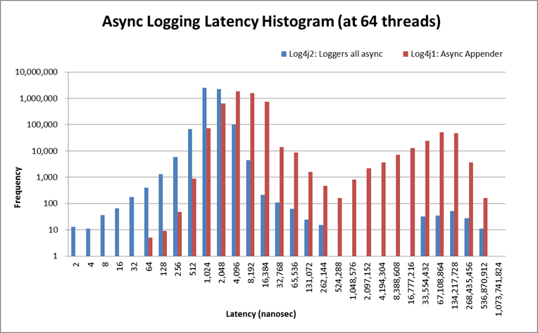
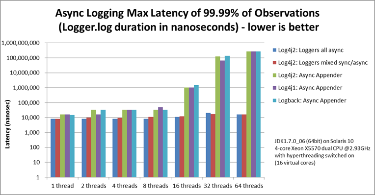

Asynchronous Loggers for Low-Latency Logging
Asynchronous logging can improve your application's performance by executing the I/O operations
in a separate thread. Log4j 2 makes a number of improvements in this area.
-
Asynchronous Loggers are a new addition to Log4j 2.
Their aim is to return from the call to Logger.log to the application as
soon as possible. You can choose between making all Loggers asynchronous
or using a mixture of synchronous and asynchronous Loggers. Making all
Loggers asynchronous will give the best performance, while mixing
gives you more flexibility.
-
LMAX Disruptor technology. Asynchronous Loggers internally use the
Disruptor, a lock-free inter-thread
communication library, instead of queues, resulting in higher throughput and lower latency.
-
Asynchronous Appenders already existed in Log4j 1.x, but have
been enhanced to flush to disk at the end of a batch (when the queue is empty).
This produces the same result as configuring "immediateFlush=true", that is, all
received log events are always available on disk, but is more efficient because it does not need to
touch the disk on each and every log event. (Async Appenders use ArrayBlockingQueue internally and
do not need the disruptor jar on the classpath.)
- (For synchronous and asynchronous use) Random Access File Appenders
are an alternative to Buffered File Appenders. Under the hood, these
new appenders use a ByteBuffer + RandomAccessFile instead of a BufferedOutputStream. In our testing
this was about 20-200% faster. These appenders can also be used
with synchronous loggers and will give the same performance benefits.
Random Access File Appenders do not need the disruptor jar on the classpath.
Trade-offs
Although asynchronous logging can give significant performance benefits,
there are situations where you may want to choose synchronous logging.
This section describes some of the trade-offs of asynchronous logging.
Benefits
-
Higher throughput. With an asynchronous logger
your application can log messages at 6 - 68 times the rate of a synchronous logger.
-
Lower logging latency.
Latency is the time it takes for a call to Logger.log to return.
Asynchronous Loggers have consistently lower latency than synchronous loggers or even
queue-based asynchronous appenders. Applications interested in low latency often care
not only about average latency, but also about worst-case latency.
Our performance comparison shows that Asynchronous Loggers also do better when comparing the
maximum latency of 99% or even 99.99% of observations with other logging methods.
- Prevent or dampen latency spikes during bursts of events. If the queue size is configured
large enough to handle spikes, asynchronous logging will help prevent your
application from falling behind (as much) during sudden bursts of activity.
Drawbacks
-
Error handling. If a problem happens during the logging process and an exception is thrown,
it is less easy for an asynchronous logger or appender to signal this problem to the
application. This can partly be alleviated by configuring an ExceptionHandler,
but this may still not cover all cases. For this reason, if logging is part of your business logic,
for example if you are using Log4j as an audit logging framework, we would
recommend to synchronously log those audit messages.
(Note that you can still combine them
and use asynchronous logging for debug/trace logging in addition to synchronous
logging for the audit trail.)
-
In some rare cases, care must be taken with mutable messages.
Most of the time you don't need to worry about this. Log4 will ensure that log messages like
logger.debug("My object is {}", myObject) will use the state of the
myObject parameter at the time of the call to logger.debug().
The log message will not change even if myObject is modified later.
It is safe to asynchronously log mutable objects because most
Message
implementations built-in to Log4j take a snapshot of the parameters.
There are some exceptions however:
MapMessage
and
StructuredDataMessage
are mutable by design: fields can be added to these messages after the message object was created.
These messages should not be modified after they are logged with asynchronous loggers or
asynchronous appenders; you may or may not see the modifications in the resulting log output.
Similarly, custom
Message
implementations should be designed with asynchronous use in mind, and either take a snapshot
of their parameters at construction time, or document their thread-safety characteristics.
Making All Loggers Asynchronous
Requires disruptor-3.0.0.jar or higher on the classpath.
This is simplest to configure and gives the best performance. To make all loggers asynchronous,
add the disruptor jar to the classpath and set the system property Log4jContextSelector
to org.apache.logging.log4j.core.async.AsyncLoggerContextSelector.
By default, location is not passed to the I/O thread by
asynchronous loggers. If one of your layouts or custom filters needs location information, you need to set
"includeLocation=true" in the configuration of all relevant loggers, including the root logger.
A configuration that does not require location might look like:
<?xml version="1.0" encoding="UTF-8"?>
<!-- Don't forget to set system property
-DLog4jContextSelector=org.apache.logging.log4j.core.async.AsyncLoggerContextSelector
to make all loggers asynchronous. -->
<Configuration status="WARN">
<Appenders>
<!-- Async Loggers will auto-flush in batches, so switch off immediateFlush. -->
<RandomAccessFile name="RandomAccessFile" fileName="async.log" immediateFlush="false" append="false">
<PatternLayout>
<Pattern>%d %p %c{1.} [%t] %m %ex%n</Pattern>
</PatternLayout>
</RandomAccessFile>
</Appenders>
<Loggers>
<Root level="info" includeLocation="false">
<AppenderRef ref="RandomAccessFile"/>
</Root>
</Loggers>
</Configuration>
When AsyncLoggerContextSelector is used to make all loggers asynchronous, make sure to use normal
<root> and <logger> elements in the configuration. The
AsyncLoggerContextSelector will ensure that all loggers are asynchronous, using a mechanism
that is different from what happens when you configure <asyncRoot>
or <asyncLogger>.
The latter elements are intended for mixing async with sync loggers. If you use both mechanisms
together you will end up with two background threads, where your application passes the log
message to thread A, which passes the message to thread B, which then finally
logs the message to disk. This works, but there will be an unnecessary step in the middle.
There are a few system properties you can use to control aspects of the asynchronous logging subsystem.
Some of these can be used to tune logging performance.
System Properties to configure all asynchronous loggers
| System Property |
Default Value |
Description |
| AsyncLogger.ExceptionHandler |
null
|
Fully qualified name of a class that implements the com.lmax.disruptor.ExceptionHandler
interface. The class needs to have a public zero-argument constructor.
If specified, this class will be notified when an exception occurs while logging the messages.
|
| AsyncLogger.RingBufferSize |
256 * 1024 |
Size (number of slots) in the RingBuffer used by the asynchronous logging subsystem.
Make this value large enough to deal with bursts of activity. The minimum size is 128.
The RingBuffer will be pre-allocated at first use and will never grow or shrink
during the life of the system.
|
| AsyncLogger.WaitStrategy |
Sleep
|
Valid values: Block, Sleep, Yield.
Block is a strategy that uses a lock and condition variable for the I/O thread waiting for log events.
Block can be used when throughput and low-latency are not as important as CPU resource.
Recommended for resource constrained/virtualised environments.
Sleep is a strategy that initially spins, then uses a Thread.yield(), and
eventually parks for the minimum number of nanos the OS and JVM will allow
while the I/O thread is waiting for log events. Sleep is a good compromise between performance
and CPU resource.
This strategy has very low impact on the application thread, in exchange for some additional
latency for actually getting the message logged.
Yield is a strategy that uses a Thread.yield() for waiting for log events after an initially spinning.
Yield is a good compromise between performance and CPU resource, but may use more CPU than Sleep
in order to get the message logged to disk sooner.
|
| AsyncLogger.ThreadNameStrategy |
CACHED
|
Valid values: CACHED, UNCACHED.
By default, AsyncLogger caches the thread name in a ThreadLocal variable to improve performance.
Specify the UNCACHED option if your application modifies the thread name at runtime (with
Thread.currentThread().setName())
and you want to see the new thread name reflected in the log.
|
| log4j.Clock |
SystemClock
|
Implementation of the org.apache.logging.log4j.core.helpers.Clock
interface that is used for timestamping the log events when all loggers are asynchronous.
By default, System.currentTimeMillis is called on every log event.
CachedClock is an optimization intended for low-latency applications where
time stamps are generated from a clock that updates its internal time in a background thread once
every millisecond, or every 1024 log events, whichever comes first.
This reduces logging latency a little, at the cost of some precision in the logged time stamps.
Unless you are logging many events, you may see "jumps" of 10-16 milliseconds between log time stamps.
WEB APPLICATION WARNING: The use of a background thread may cause issues
for web applications and OSGi applications so CachedClock is not recommended for this kind
of applications.
You can also specify a fully qualified class name of a custom class that implements the
Clock interface.
|
Mixing Synchronous and Asynchronous Loggers
Requires disruptor-3.0.0.jar or higher on the classpath. There is no need to set system property
"Log4jContextSelector" to any value.
Synchronous and asynchronous loggers can be combined in configuration.
This gives you more flexibility at the cost of a slight loss in performance (compared to making
all loggers asynchronous). Use the <asyncRoot> or <asyncLogger>
configuration elements to specify the loggers that need to be asynchronous.
The same configuration file can also contain <root> and
<logger> elements for the synchronous loggers.
By default, location is not passed to the I/O thread by asynchronous loggers.
If one of your layouts or custom filters needs location information, you need to set
"includeLocation=true" in the configuration of all relevant loggers, including the root logger.
A configuration that mixes asynchronous loggers might look like:
<?xml version="1.0" encoding="UTF-8"?>
<!-- No need to set system property "Log4jContextSelector" to any value
when using <asyncLogger> or <asyncRoot>. -->
<Configuration status="WARN">
<Appenders>
<!-- Async Loggers will auto-flush in batches, so switch off immediateFlush. -->
<RandomAccessFile name="RandomAccessFile" fileName="asyncWithLocation.log"
immediateFlush="false" append="false">
<PatternLayout>
<Pattern>%d %p %class{1.} [%t] %location %m %ex%n</Pattern>
</PatternLayout>
</RandomAccessFile>
</Appenders>
<Loggers>
<!-- pattern layout actually uses location, so we need to include it -->
<AsyncLogger name="com.foo.Bar" level="trace" includeLocation="true">
<AppenderRef ref="RandomAccessFile"/>
</AsyncLogger>
<Root level="info" includeLocation="true">
<AppenderRef ref="RandomAccessFile"/>
</Root>
</Loggers>
</Configuration>
There are a few system properties you can use to control aspects of the asynchronous logging subsystem.
Some of these can be used to tune logging performance.
System Properties to configure mixed asynchronous and normal loggers
| System Property |
Default Value |
Description |
| AsyncLoggerConfig.ExceptionHandler |
null
|
Fully qualified name of a class that implements the com.lmax.disruptor.ExceptionHandler
interface. The class needs to have a public zero-argument constructor.
If specified, this class will be notified when an exception occurs while logging the messages.
|
| AsyncLoggerConfig.RingBufferSize |
256 * 1024 |
Size (number of slots) in the RingBuffer used by the asynchronous logging subsystem.
Make this value large enough to deal with bursts of activity. The minimum size is 128.
The RingBuffer will be pre-allocated at first use and will never grow
or shrink during the life of the system.
|
| AsyncLoggerConfig.WaitStrategy |
Sleep
|
Valid values: Block, Sleep, Yield.
Block is a strategy that uses a lock and condition variable for the I/O thread waiting for log events.
Block can be used when throughput and low-latency are not as important as CPU resource.
Recommended for resource constrained/virtualised environments.
Sleep is a strategy that initially spins, then uses a Thread.yield(), and
eventually parks for the minimum number of nanos the OS and JVM will allow
while the I/O thread is waiting for log events. Sleep is a good compromise between performance
and CPU resource.
This strategy has very low impact on the application thread, in exchange for some additional
latency for actually getting the message logged.
Yield is a strategy that uses a Thread.yield() for waiting for log events after an initially spinning.
Yield is a good compromise between performance and CPU resource, but may use more CPU than Sleep
in order to get the message logged to disk sooner.
|
Location, location, location...
If one of the layouts is configured with a location-related attribute like HTML
locationInfo,
or one of the patterns %C or $class,
%F or %file,
%l or %location,
%L or %line,
%M or %method,
Log4j will take a snapshot of the stack, and walk the stack trace to find the location information.
This is an expensive operation: 1.3 - 5 times slower for synchronous loggers. Synchronous loggers wait as
long as possible before they take this stack snapshot. If no location is required, the snapshot will never be taken.
However, asynchronous loggers need to make this decision before passing the
log message to another thread; the location information will be lost after that point.
The performance impact of taking a stack trace snapshot is even higher for asynchronous loggers:
logging with location is 4 - 20 times slower than without location.
For this reason, asynchronous loggers and asynchronous appenders do not include location information by default.
You can override the default behaviour in your logger or asynchronous appender configuration
by specifying includeLocation="true".
Asynchronous Logging Performance
The performance results below were all derived from running the PerfTest, MTPerfTest and PerfTestDriver
classes which can be found in the Log4j 2 unit test source directory.
All tests were done using the default settings (SystemClock and SleepingWaitStrategy).
The methodology used was the same for all tests:
- First, warm up the JVM by logging 200,000 log messages of 500 characters.
- Repeat the warm-up 10 times, then wait 10 seconds for the I/O thread to catch up and buffers to drain.
- Latency test: at less than saturation, measure how long a call to Logger.log takes.
Pause for 10 microseconds * threadCount between measurements. Repeat this 5 million times,
and measure average latency, latency of 99% of observations and 99.99% of observations.
- Throughput test: measure how long it takes to execute 256 * 1024 / threadCount calls to Logger.log
and express the result in messages per second.
- Repeat the test 5 times and average the results.
The results below were obtained with log4j-2.0-beta5, disruptor-3.0.0.beta3,
log4j-1.2.17 and logback-1.0.10.
Logging Throughput
The graph below compares the throughput of synchronous loggers, asynchronous appenders and asynchronous
loggers. This is the total throughput of all threads together. In the test with 64 threads,
asynchronous loggers are 12 times faster than asynchronous appenders, and 68 times faster than
synchronous loggers.
Asynchronous loggers' throughput increases with the number of threads,
whereas both synchronous loggers and asynchronous appenders
have more or less constant throughput regardless of the number of
threads that are doing the logging.

Asynchronous Throughput Comparison with Other Logging Packages
We also compared throughput of asynchronous loggers to the synchronous loggers and asynchronous
appenders available in other logging packages, specifically log4j-1.2.17 and
logback-1.0.10, with similar results. For asynchronous appenders, total logging throughput of all
threads together remains roughly constant when adding more threads.
Asynchronous loggers make more effective use of the multiple cores
available on the machine in multi-threaded scenarios.

On Solaris 10 (64bit) with JDK1.7.0_06, 4-core Xeon X5570 dual CPU
@2.93Ghz with hyperthreading switched on (16 virtual cores):
Throughput per thread in
messages/second
| Logger |
1 thread |
2 threads |
4 threads |
8 threads |
16 threads |
32 threads |
64 threads |
| Log4j 2: Loggers all asynchronous |
2,652,412 |
909,119 |
776,993 |
516,365 |
239,246 |
253,791 |
288,997 |
| Log4j 2: Loggers mixed sync/async |
2,454,358 |
839,394 |
854,578 |
597,913 |
261,003 |
216,863 |
218,937 |
| Log4j 2: Async Appender |
1,713,429 |
603,019 |
331,506 |
149,408 |
86,107 |
45,529 |
23,980 |
| Log4j1: Async Appender |
2,239,664 |
494,470 |
221,402 |
109,314 |
60,580 |
31,706 |
14,072 |
| Logback: Async Appender |
2,206,907 |
624,082 |
307,500 |
160,096 |
85,701 |
43,422 |
21,303 |
| Log4j 2: Synchronous |
273,536 |
136,523 |
67,609 |
34,404 |
15,373 |
7,903 |
4,253 |
| Log4j1: Synchronous |
326,894 |
105,591 |
57,036 |
30,511 |
13,900 |
7,094 |
3,509 |
| Logback: Synchronous |
178,063 |
65,000 |
34,372 |
16,903 |
8,334 |
3,985 |
1,967 |
On Windows 7 (64bit) with JDK1.7.0_11, 2-core Intel i5-3317u CPU
@1.70Ghz with hyperthreading switched on (4 virtual cores):
Throughput per thread in
messages/second
| Logger |
1 thread |
2 threads |
4 threads |
8 threads |
16 threads |
32 threads |
| Log4j 2: Loggers all asynchronous |
1,715,344 |
928,951 |
1,045,265 |
1,509,109 |
1,708,989 |
773,565 |
| Log4j 2: Loggers mixed sync/async |
571,099 |
1,204,774 |
1,632,204 |
1,368,041 |
462,093 |
908,529 |
| Log4j 2: Async Appender |
1,236,548 |
1,006,287 |
511,571 |
302,230 |
160,094 |
60,152 |
| Log4j1: Async Appender |
1,373,195 |
911,657 |
636,899 |
406,405 |
202,777 |
162,964 |
| Logback: Async Appender |
1,979,515 |
783,722 |
582,935 |
289,905 |
172,463 |
133,435 |
| Log4j 2: Synchronous |
281,250 |
225,731 |
129,015 |
66,590 |
34,401 |
17,347 |
| Log4j1: Synchronous |
147,824 |
72,383 |
32,865 |
18,025 |
8,937 |
4,440 |
| Logback: Synchronous |
149,811 |
66,301 |
32,341 |
16,962 |
8,431 |
3,610 |
Throughput of Logging With Location (includeLocation="true")
On Solaris 10 (64bit) with JDK1.7.0_06, 4-core Xeon X5570 dual CPU
@2.93Ghz with hyperthreading switched off (8 virtual cores):
Throughput in log messages/second per thread
| Logger (Log4j 2) |
1 thread |
2 threads |
4 threads |
8 threads |
| Loggers all asynchronous |
75,862 |
88,775 |
80,240 |
68,077 |
| Loggers mixed sync/async |
61,993 |
66,164 |
55,735 |
52,843 |
| Async Appender |
47,033 |
52,426 |
50,882 |
36,905 |
| Synchronous |
31,054 |
33,175 |
29,791 |
23,628 |
As expected, logging location information has a large performance impact. Asynchronous loggers are 4 - 20
times slower, while synchronous loggers are 1.3 - 5 times slower. However, if you do need
location information, asynchronous logging will still be faster than synchronous logging.
Latency
Latency tests are done by logging at less than saturation, measuring how long a call to Logger.log
takes to return. After each call to Logger.log, the test waits for 10 microseconds * threadCount before continuing.
Each thread logs 5 million messages.
All the latency measurements below are results of tests run
on Solaris 10 (64bit) with JDK1.7.0_06, 4-core Xeon X5570 dual CPU
@2.93Ghz with hyperthreading switched on (16 virtual cores).

Note that this is log-scale, not linear. The above graph compares the latency distributions of
an asynchronous logger and a Log4j 1.2.17 Async Appender. This shows the latency of one thread
during a test where 64 threads are logging in parallel.
The test was run once for the async logger and once for the async appender.
Latency of a call to Logger.log() in nanoseconds
|
Average latency |
99% observations less than |
99.99% observations less than |
|
1 thread |
64 threads |
1 thread |
64 threads |
1 thread |
64 threads |
| Log4j 2: Loggers all async |
677 |
4,135 |
1,638 |
4,096 |
8,192 |
16,128 |
| Log4j 2: Loggers mixed sync/async |
648 |
4,873 |
1,228 |
4,096 |
8,192 |
16,384 |
| Log4j 2: Async Appender |
2,423 |
2,117,722 |
4,096 |
67,108,864 |
16,384 |
268,435,456 |
| Log4j1: Async Appender |
1,562 |
1,781,404 |
4,096 |
109,051,904 |
16,384 |
268,435,456 |
| Logback: Async Appender |
2,123 |
2,079,020 |
3,276 |
67,108,864 |
14,745 |
268,435,456 |
The latency comparison graph below is also log-scale, and shows the average latency of asynchronous loggers and
ArrayBlockingQueue-based asynchronous appenders in scenarios with more and more threads running in parallel.
Up to 8 threads asynchronous appenders have comparable average latency, two or three times that of asynchronous loggers.
With more threads, the average latency of asynchronous appenders is orders of magnitude larger than
asynchronous loggers.

Applications interested in low latency often care not only about average latency, but also about worst-case latency.
The graph below shows that asynchronous loggers also do better when comparing the maximum latency of 99.99% of
observations with other logging methods.
When increasing the number of threads the vast majority of latency measurements for asynchronous
loggers stay in the 10-20 microseconds range where Asynchronous Appenders start experiencing many
latency spikes in the 100 millisecond range, a difference of four orders of magnitude.

FileAppender vs. RandomAccessFileAppender
The appender comparison below was done with synchronous loggers.
On Windows 7 (64bit) with JDK1.7.0_11, 2-core Intel i5-3317u CPU
@1.70Ghz with hyperthreading switched on (4 virtual cores):
Throughput per thread in messages/second
| Appender |
1 thread |
2 threads |
4 threads |
8 threads |
| RandomAccessFileAppender |
250,438 |
169,939 |
109,074 |
58,845 |
| FileAppender |
186,695 |
118,587 |
57,012 |
28,846 |
| RollingRandomAccessFileAppender |
278,369 |
213,176 |
125,300 |
63,103 |
| RollingFileAppender |
182,518 |
114,690 |
55,147 |
28,153 |
On Solaris 10 (64bit) with JDK1.7.0_06, 4-core dual Xeon X5570 CPU
@2.93GHz with hyperthreading switched off (8 virtual cores):
Throughput per thread in messages/second
| Appender |
1 thread |
2 threads |
4 threads |
8 threads |
| RandomAccessFileAppender |
240,760 |
128,713 |
66,555 |
30,544 |
| FileAppender |
172,517 |
106,587 |
55,885 |
25,675 |
| RollingRandomAccessFileAppender |
228,491 |
135,355 |
69,277 |
32,484 |
| RollingFileAppender |
186,422 |
97,737 |
55,766 |
25,097 |
Under The Hood
Asynchronous Loggers are implemented using the
LMAX Disruptor
inter-thread messaging library. From the LMAX web site:
... using queues to pass data between stages of the system was introducing latency, so we
focused on optimising this area. The Disruptor is the result of our research and testing.
We found that cache misses at the CPU-level, and locks requiring kernel arbitration are both
extremely costly, so we created a framework which has "mechanical sympathy" for
the hardware it's running on, and that's lock-free.
LMAX Disruptor internal performance comparisons with java.util.concurrent.ArrayBlockingQueue
can be found
here.
|